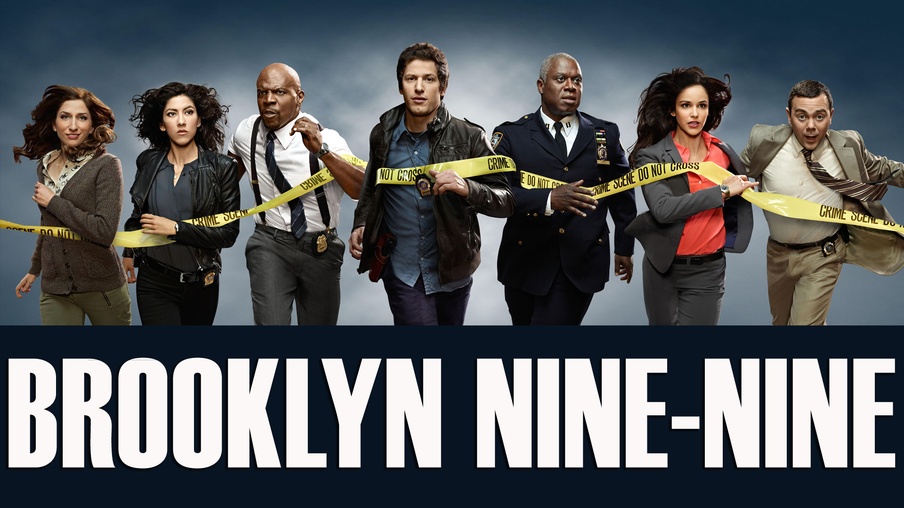

Um pouco sobre Brooklyn 99
Brooklyn Nine-Nine é uma série de humor que apresenta o dia-a-dia do grupo de detetives de uma delegacia de polícia no distrito do Brooklyn. A equipe possui extrema competência em resolver crimes com muito bom humor e provocar situações hilárias em meio ao convívio diário.
O seriado acompanha o imaturo detetive Jake Peralta (Andy Samberg) e a relação que ele tem com seus companheiros e com o novo capitão, Ray Holt (Andre Braugher). Teve suas primeiras 5 temporadas produzidas pela FOX e após ter o seu cancelamento anunciado, foi resgatada pela NBC, que confirmou a produção até a 8ª temporada. Cada episódio possui, em média, 22 minutos. Desse modo, é possível até maratonar facilmente.